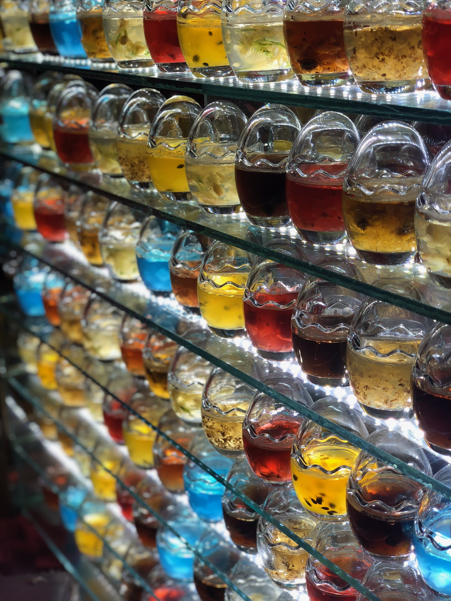

搭！搭tmd！
老早就想建个博客站了，无奈之前国内的服务器域名要备案国外的vps也不稳。拿个架酸酸乳的vps他配置又不行，装个最新版的wordpress都直呼亚历山大。还好无意之中发现github居然提供静态的网页托管服务，遂爬了一堆教程，终于搭上了博客。
现在网站logo还是用的还是默认的，毕竟懒得找icon了还不是因为懒。但是起码有头像有音乐了！取名为阁楼呢是因为我觉得阁楼就是一个放一些乱七八糟的东西的地方，虽然东西很杂，但是正是因为杂，就可以在里面玩得很开心。侧边栏的音乐用的是apple music，没开的话一首歌只能听30秒就算开了你也只能听30秒，因为你不可能登得上的，而且还影响网站加载速度。那这里你可能就要问了，为什么我还要挂apple music呢，一是因为我觉得好看，二是我想放的音乐网易云他没版权，生成不了外链！综上，我就放了个apple music在那里
怎么搭呢？
本博客基于hexo+github page，用了NexT主题，配置还算方便。就算你像我一样对前端一点不懂，也能搭出来能用，看起来还说得过去的博客。如果你啥也不会，那么点击这里。这位dalao讲得非常详细了。
如果你想要美观一点的话，可以尝试使用NexT主题。但是注意要安装最新的NexT主题，之前老的NexT已经不维护了。同时配置的话可以参考这位大大的教程链接在这里。这篇教程可以说是讲得非常详细了，而且越算是比较新的教程了。因为在配置主题的时候搜到的许多教程的配置方式还是老的配置方式，最明显的区别就是自定义样式的时候，新版的NexT是在根目录source文件夹下的_data_文件夹里面放上你的自定义的各种乱七八糟的东西，同时要在NexT主题的配置文件中启用你的自定义文件，大概长这样。
1 | #文件位置 ~/themes/next/_config.yml |
大概就是这样，我也会在文末放置一些dalao的教程，当然官方文档也是最最需要看的。
后记
拉拉杂杂写了一大堆，但是这个博客还是有很多能改进的地方，姑且就在这里列出来吧。
- 能有什么操作能隐藏文章和访问隐藏文章
- 侧边栏的黑色搞成彩色（其实也可以不搞
- 找一个网站logo
- 给网站整个背景
- 访客统计
- 自动切黑白
- 貌似没了
不过这些功能目前来说都是可有可无的，等我哪天心情好了可能就有了吧。
好了，现在这个博客已经基本上能看了，最后放一张大一的时候去吃夜市拍的一张图收尾吧，顺便测试一下图片插入有没有问题。
